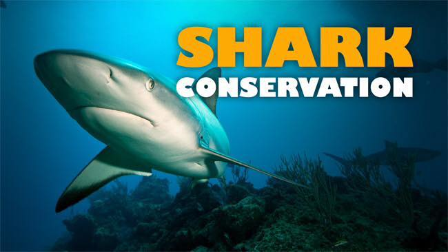

Save our Sharks in September!
Partly because it's grass-roots itself, Roller Derby has always been happy to raise money for other good causes. The 3rd of September might have a first even for Roller Derby, though, as Glasgow Caledonian University's ARC hosts a double-header extravaganza with the aim of raising money to save endangered sharks!
Organiser, Lisa Alexander, used to skate for Perth's Fair City and Edinburgh's Auld Reekie, before taking a break from derby in order to dedicate herself to her degree in Environmental Science with the University of the Highlands and Islands. As part of this, she's raising funds to support and participate in a conservation study in Fiji.

Sharks are surprisingly endangered, mostly due to overfishing (for sharksfin soup and other foods), and the fact that, as apex predators, pollution affects them far more severely than other animals (as they eat all the pollution in their prey, too). Unfortunately, apex predators are also extremely important to the ecosystems they're part of - just as wolves kept deer populations under control in Scotland until we wiped them out, sharks manage the population of the rest of the ocean's inhabitants, and a threat to them is a threat to the entire balance of the sea's ecosystem.
While she also has a more formal fundraising page here (which has more information on the plan and situation), Lisa always planned to include Roller Derby in her approach.
"I guess it was always a fundraising event that I had in mind," she told us. "I've been involved in Roller Derby for 5 years and, although I've stopped skating to concentrate on the project, I felt like I still had the experience and support network to make it a successful fundraiser. I know how amazing and supportive the Roller Derby community is, and I knew that they would get behind the project; because, who doesn't love sharks, or roller derby?"
With skaters participating from all across Scotland's leagues, the event will feature both a female and a co-ed mixed bout, as well as a host of stalls, a raffle (with a selection of prizes including handmade glass vases, and climbing tickets!), tombola, and plenty of shark-related theming and puns, it will be worth turning up even without the good cause. A shark-shaped stamp has even been sourced for stamping entrants...
The Facebook event page is here: https://www.facebook.com/events/829978330437565/ with the tickets available from Brown Paper Tickets here: http://m.bpt.me/event/2580086
Doors open at 12:20 for the first bout around 20 to 30 minutes later.
Tickets are £10 on the day (free for under 14s), or just £8 in advance online.